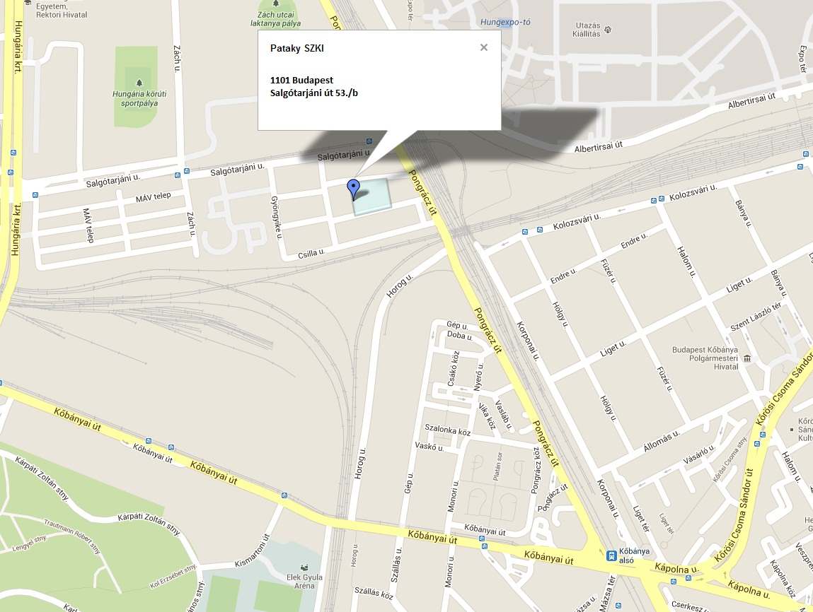
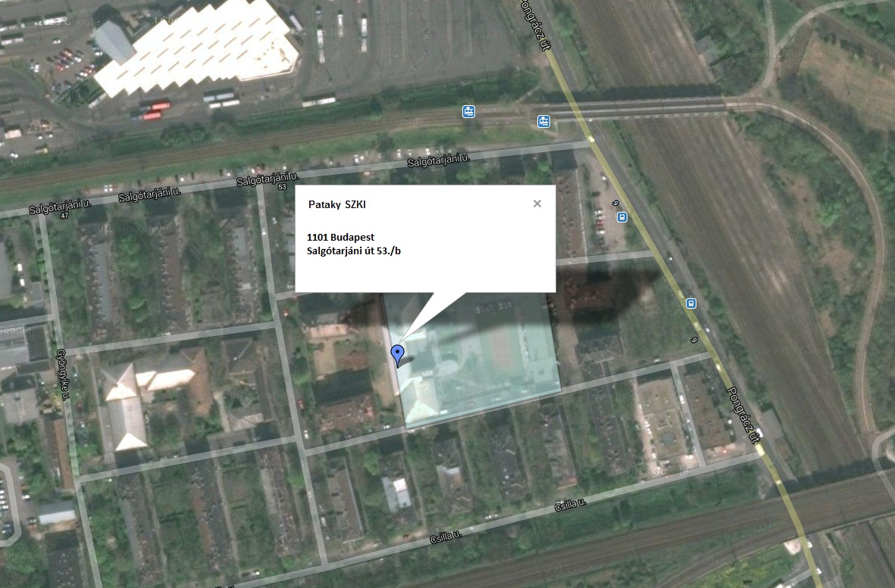

Elérhetőségek
Budapesti Műszaki Szakképző Centrum Pataky István Híradásipari és Informatikai Szakgimnáziuma
Központ:
1146, Budapest, Thököly út 48.-54.
OM-azonosító: 203058
Az iskola címe:
1101, Budapest, Salgótarjáni út 53./b
Telefon: 06 1 261 2615
e-mail:
Általános ügyekben: pataky@pataky.hu
Weboldallal kapcsolatos technikai kérdések: webmaster@pataky.hu
Iskolánk elhelyezkedése megtekinthető az alábbi térképrészleteken:


Közösségi közlekedéssel:
– a 37-es és 37A villamosokkal az Új köztemetőtől és a Blaha Lujza tértől,
– a 95-ös autóbusszal a Gyömrői úttól és Puskás Stadiontól,
– vonattal szolnoki fővonalon közlekedő járatokkal Kőbánya-felső állomástól, illetve a ceglédi fővonalon közlekedő járatokkal Kőbánya-alsó állomástól vagyunk elérhetőek.